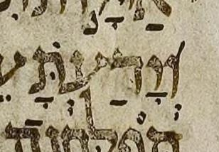

{kind=link}

| וְ֝יָדַעְתָּ֜ וְ֝יָדַעְתָּ֗ |
# 39:2 | גרש not רביע in μL, says BHL but not BHQ |
The mark in question is very heavy, having a stroke width more typical of a letter-stroke than of a niqqud-stroke. Its clarity suggests it is part of the re-inking. Indeed perhaps it is only part of the re-inking, i.e. perhaps it reflects no mark (or only a much smaller mark) in the original. The mark in question may be two marks, a רביע (expected) overlaid with a גרש (unexpected). Or, it may be only a single mark whose lower end is, for some reason, a blob.
BHQ silently supplies the רביע that is the consensus expectation. It may be interesting to note that BHS had the רביע on ד. Like all changes in BHQ, this change had to be discovered, since changes from 1997 BHS to BHQ are undocumented. It is a painful “exercise left to the reader” to discover such changes. The lack of documentation is a DBG tradition carried over from BHS, which lacks documentation for both its 1977 to 1984 changes and its 1984 to 1997 changes.
U — M — μL 408A col. 2 line -3 (3 counting from bottom of column)
μA (Aleppo) (page 280v, col 1, line 16, word 1):
